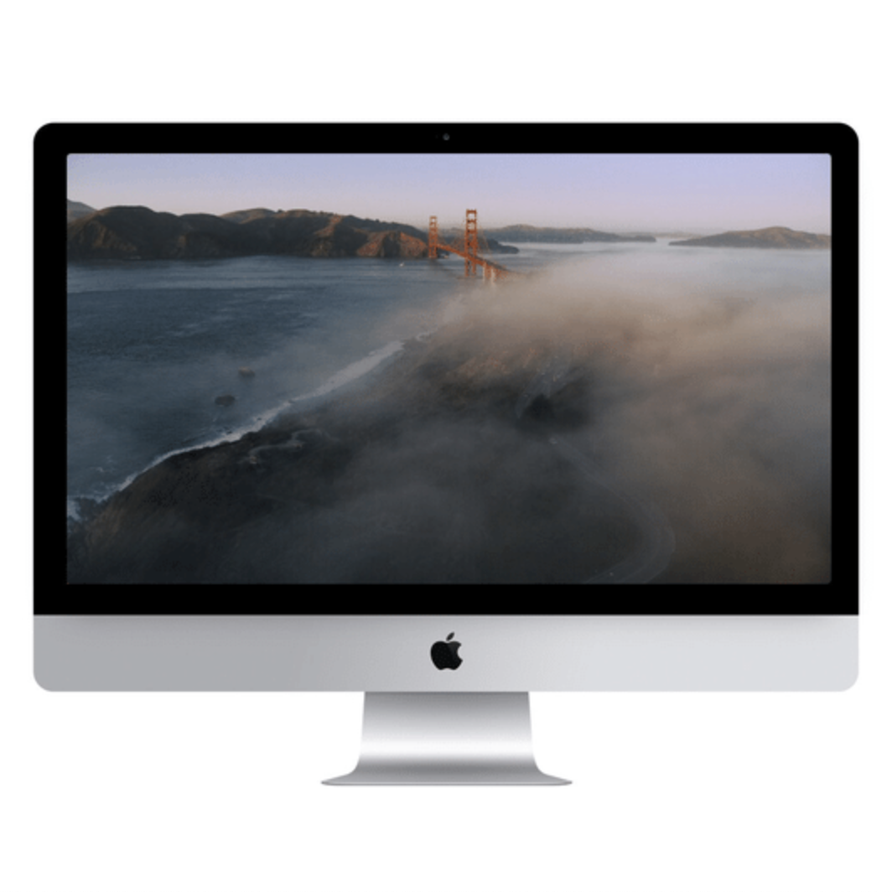

Aerial - mac OS Screen Saver

Screen savers are a little silly, considering so many computer screens these days hardly need saving. Regardless, I love the videos Apple has shot of these various scenes, and I love the ease with which they're displayed on my computer.
Previously: UrBackup Next: Breakdown of a Joke